Rows: 560 Columns: 60
── Column specification ────────────────────────────────────────────────────────
Delimiter: ","
chr (4): wandCore, sex, bloodStatus, house
dbl (56): id, course, result, Defence against the dark arts exam, Flying exa...
ℹ Use `spec()` to retrieve the full column specification for this data.
ℹ Specify the column types or set `show_col_types = FALSE` to quiet this message.
tips <-read_csv("data/podskazka.csv")
Rows: 1222 Columns: 2
── Column specification ────────────────────────────────────────────────────────
Delimiter: ","
dbl (2): y, x
ℹ Use `spec()` to retrieve the full column specification for this data.
ℹ Specify the column types or set `show_col_types = FALSE` to quiet this message.
0.
ggplot(tips, aes(x = x, y =-y)) +geom_point(size =1, alpha =0.8) +coord_fixed() +theme_void() +labs(title ="Скрытая надпись из файла podskazka.csv")
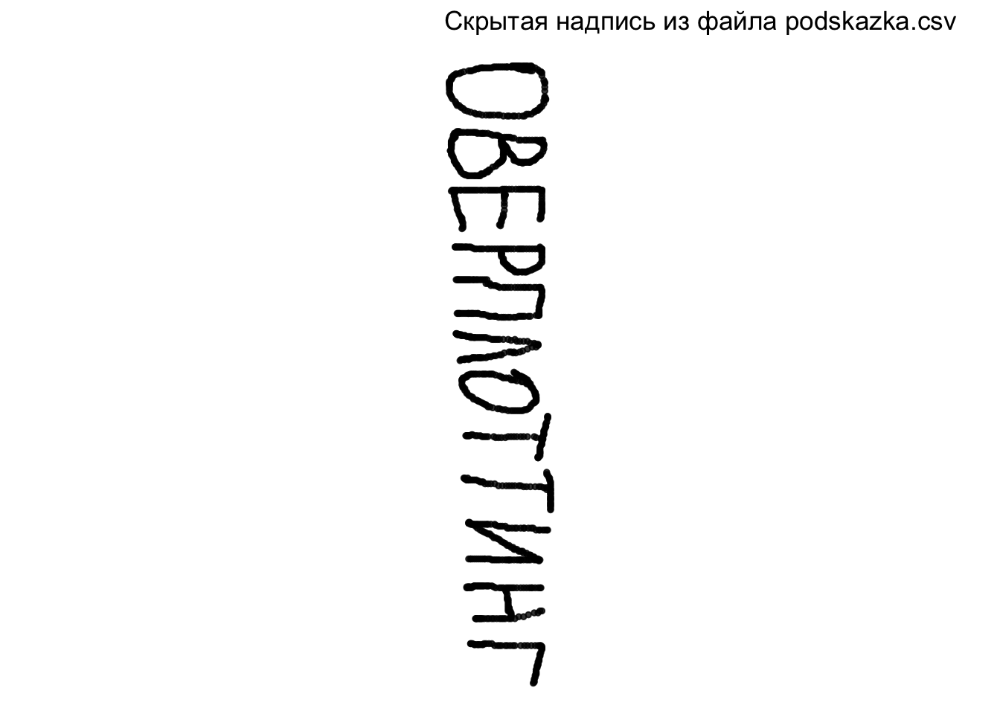
1.
ggplot(hogwarts, aes(x =factor(course))) +geom_bar(fill ="#6495ED",color ="black",width =0.7 ) +labs(title ="Распределение студентов по курсам",x ="Курс обучения",y ="Количество студентов" ) +theme_minimal(base_size =15)
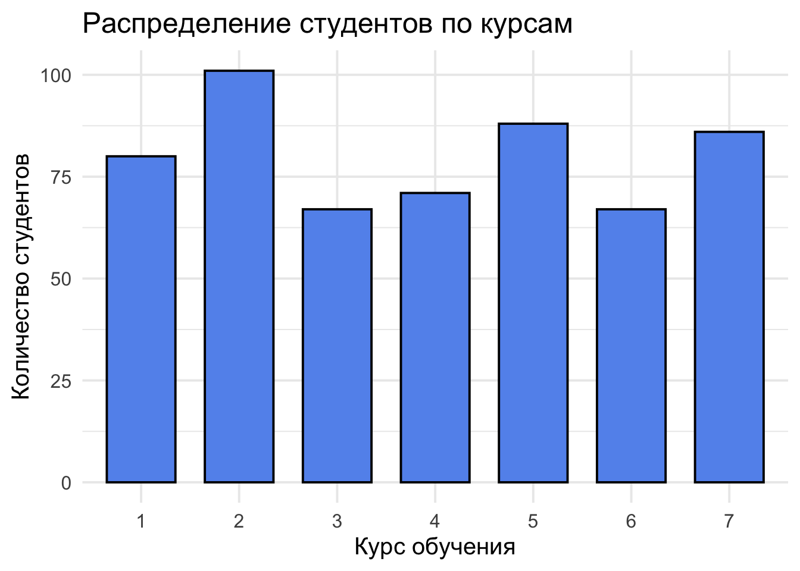
2.
library(scales)
Attaching package: 'scales'
The following object is masked from 'package:purrr':
discard
The following object is masked from 'package:readr':
col_factor
hogwarts %>%mutate( Факультет =case_when( house =="Slytherin"~"Слизерин", house =="Hufflepuff"~"Пуффендуй", house =="Gryffindor"~"Гриффиндор", house =="Ravenclaw"~"Когтевран",TRUE~ house ), Происхождение =case_when( bloodStatus =="pure-blood"~"Чистокровные", bloodStatus =="half-blood"~"Полукровные", bloodStatus =="muggle-born"~"Грязнокровные",TRUE~ bloodStatus ) ) %>%ggplot(aes(x = Факультет, fill = Происхождение)) +geom_bar(position ="fill", color ="black", width =0.8) +scale_y_continuous(labels =percent_format(accuracy =1)) +labs(title ="Распределение студентов по факультетам\nс учётом происхождения (в долях)",x ="Факультет",y ="Доля студентов",fill ="Происхождение" ) +theme_minimal(base_size =15) +theme(plot.title =element_text(face ="bold", lineheight =1.1),axis.title =element_text(face ="bold"),axis.text.x =element_text(angle =15, hjust =1) )
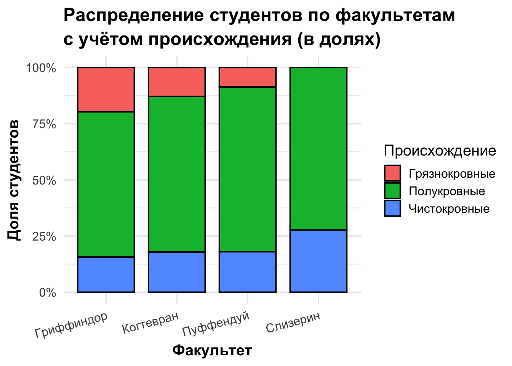
Как можно видеть из данного графика, наибольшее количество студентов Хогвартса - Полукровные волшебники. Также мы видим, что, судя по всему, Слизерин не принимает детей, рожденных двумя маглами. Зато отдает большее предпочтение чистокровным волшебникам.
3.
library(forcats)df_w3 <- hogwarts %>%mutate( Факультет =case_when( house =="Slytherin"~"Слизерин", house =="Hufflepuff"~"Пуффендуй", house =="Gryffindor"~"Гриффиндор", house =="Ravenclaw"~"Когтевран",TRUE~ house ), Факультет =fct_reorder(Факультет, week_3, .fun = median, .desc =TRUE) )ggplot(df_w3, aes(x = Факультет, y = week_3)) +geom_violin(fill ="#B0C4DE", color ="grey25", alpha =0.9, trim =FALSE) +geom_boxplot(width =0.16, outlier.shape =NA, fill ="white", color ="black") +geom_jitter(width =0.08, height =0, alpha =0.35, size =1) +stat_summary(fun = median, geom ="point", shape =23, size =2.8, fill ="gold", color ="black") +labs(title ="Распределение баллов на 3-й неделе обучения по факультетам",subtitle ="Форма (violin) + описательные статистики (boxplot и медиана)",x ="Факультет (отсортированы по убыванию медианы)",y ="Баллы на 3-й неделе" ) +theme_minimal(base_size =15) +theme(plot.title =element_text(face ="bold"),axis.title =element_text(face ="bold"),axis.text.x =element_text(angle =15, hjust =1) )
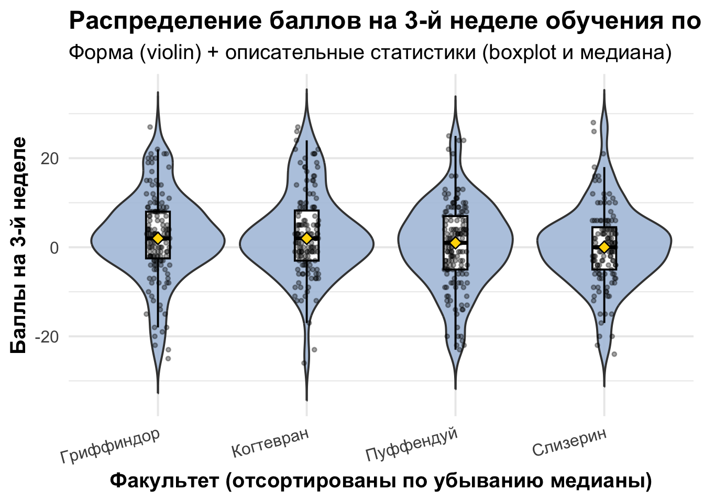
Здесь можно видеть, что самый высокий медианный балл у факультета Гриффиндор, а самый низкий - у Слизерина, хотя у всех факультетов медианный балл близок к нулю. И распределение баллов у всех факультетов можно сказать что унимодальное, большая часть полученных баллов за 3 неделю группируются вокруг нуля.
4.
hogwarts %>%ggplot(aes(x =`Muggle studies exam`)) +geom_histogram(bins =15,fill ="#FFB347",color ="black",alpha =0.85 ) +facet_wrap(~ course, ncol =4) +labs(title ="Распределение результатов экзамена по магловедению",subtitle ="Фасет по курсу обучения",x ="Баллы за экзамен",y ="Количество студентов" ) +theme_minimal(base_size =13) +theme(plot.title =element_text(face ="bold"),strip.text =element_text(face ="bold"),axis.title =element_text(face ="bold"),panel.spacing =unit(0.6, "lines") )
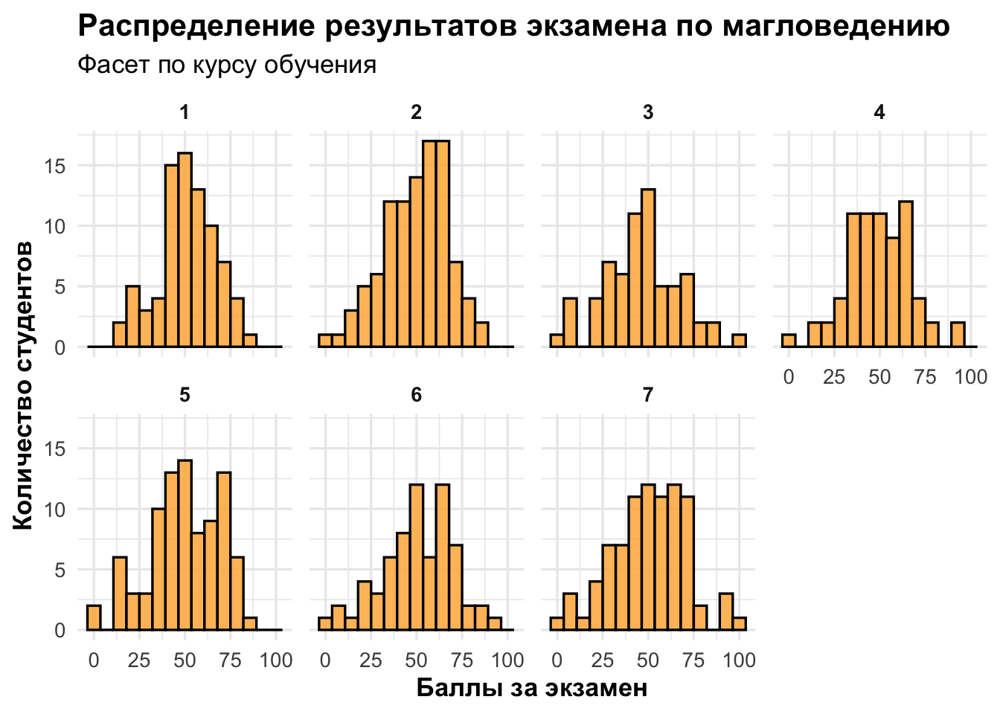
Из данного графика мы можем видеть, что распредение баллов за экзамен по магловедению во всех курсах унимодальное с пиком около 50 или 60 баллов.
5.
library(ggplot2)df_year <- hogwarts %>%mutate(total_year =rowSums(across(starts_with("week_")), na.rm =TRUE),herb =`Herbology exam` )df_scatter <- df_year %>%count(total_year, herb, name ="n")ggplot(df_scatter, aes(x = total_year, y = herb)) +geom_point(aes(size = n), alpha =0.6) +scale_size_area(max_size =6, guide ="none") +geom_smooth(aes(weight = n),method ="lm", formula = y ~ x,se =FALSE, linewidth =1.1, color ="firebrick" ) +labs(title ="Связь суммарного балла за год и оценки по травологии",subtitle ="Точки агрегированы: размер отражает число студентов с одинаковыми значениями",x ="Суммарный балл за год (week_1 … week_40)",y ="Оценка за экзамен по травологии" ) +theme_minimal(base_size =14) +theme(plot.title =element_text(face ="bold"),axis.title =element_text(face ="bold") )
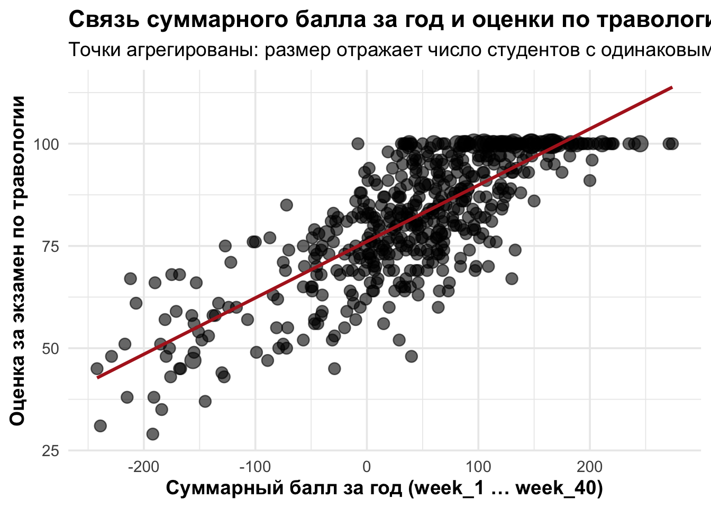
Мы видим четкий тренд - чем выше суммарный балл за год (сложение баллов за недели с первой по сороковую), тем выше оценка за экзамен по травологии (гербологии). В какой-то момент мы также видим, что высшая оценка за экзамен по травологии - 100 баллов. Также мы видим, что большая часть студентов получили положительные суммарные баллы за год и больше 75 баллов за травологию.
6.
pal <-c("Гриффиндор"="#C50000","Пуффендуй"="#ECB936","Когтевран"="#41A6D9","Слизерин"="#1F5D25")df_exams <- hogwarts %>%mutate(total_year =rowSums(across(starts_with("week_")), na.rm =TRUE), Факультет =case_when( house =="Gryffindor"~"Гриффиндор", house =="Hufflepuff"~"Пуффендуй", house =="Ravenclaw"~"Когтевран", house =="Slytherin"~"Слизерин",TRUE~as.character(house) ) ) %>%select(total_year, Факультет,`Herbology exam`, `Muggle studies exam`, `Arithmancy exam`, `Potions exam`) %>%pivot_longer(cols =c(`Herbology exam`, `Muggle studies exam`, `Arithmancy exam`, `Potions exam`),names_to ="exam",values_to ="score" ) %>%mutate( Экзамен =recode(exam,`Herbology exam`="Травология",`Muggle studies exam`="Магловедение",`Arithmancy exam`="Нумерология",`Potions exam`="Зельеварение") ) %>%mutate(Факультет =factor(Факультет, levels =names(pal)))df_agg <- df_exams %>%count(Экзамен, total_year, score, Факультет, name ="n")ggplot(df_agg, aes(x = total_year, y = score, color = Факультет)) +geom_point(aes(size = n), alpha =0.6) +scale_size_area(max_size =5, guide ="none") +scale_color_manual(values = pal, name ="Факультет") +geom_smooth(aes(weight = n, group =1),method ="lm", formula = y ~ x, se =FALSE,linewidth =1.05, color ="black" ) +facet_wrap(~ Экзамен, ncol =2) +labs(title ="Суммарный годовой балл vs оценка за экзамен",subtitle ="Точки агрегированы (размер = частота); чёрная линия — линейный тренд без доверительного интервала",x ="Суммарный балл за год (week_1 … week_40)",y ="Баллы за экзамен" ) +theme_minimal(base_size =13) +theme(plot.title =element_text(face ="bold"),axis.title =element_text(face ="bold"),legend.position ="bottom",panel.spacing =unit(0.6, "lines") )
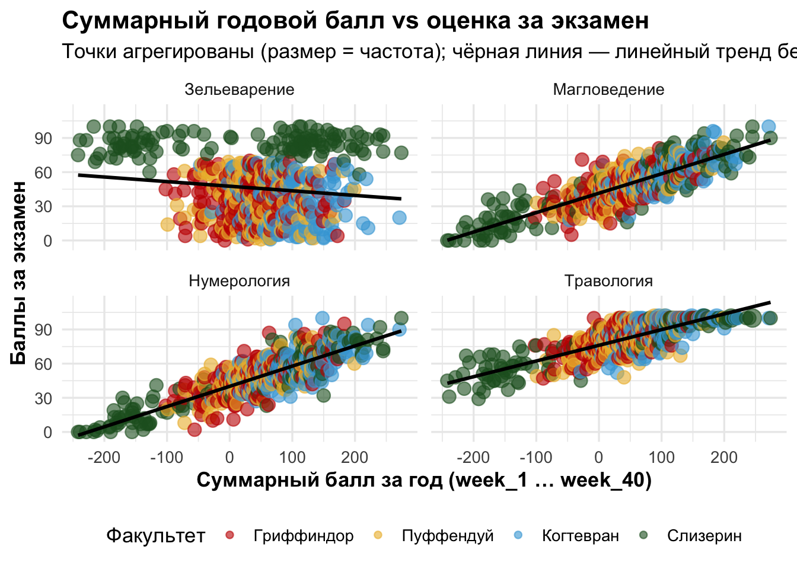
Мы можем видеть, что для трех предметов (магловедение, нумерология, травология) общий тренд сохраняется - чем выше суммарный балл за год, тем лучше баллы за экзамен. При этом у травологии баллы начинаются примерно с 30 (видимо, добрый профессор). Также видно, что большая часть Слизерина получила плохие оценки и плохие баллы за год, при этом есть небольшая часть Слизерина, получающая очень хорошие оценки (то есть отчетливо выделяется два типа учеников).
Однако совсем другая ситуация у Зельеварения. Во-первых, мы видим, что чем лучше общий балл, тем хуже (незначительно, но все же) балл за экзамен (профессор Снейп не любит таких, как Гермиона). Также мы видим, что это относится ко всем факультетам, кроме Слизерина - у них почти у всех около 90-100 баллов. Профессор Снейп явно предвзят.
7.
# Группируем по факультетамpal <-c("Гриффиндор"="#C50000","Пуффендуй"="#ECB936","Когтевран"="#41A6D9","Слизерин"="#1F5D25")df_exams <- hogwarts %>%mutate(total_year =rowSums(across(starts_with("week_")), na.rm =TRUE), Факультет =case_when( house =="Gryffindor"~"Гриффиндор", house =="Hufflepuff"~"Пуффендуй", house =="Ravenclaw"~"Когтевран", house =="Slytherin"~"Слизерин",TRUE~as.character(house) ) ) %>%select(total_year, Факультет,`Herbology exam`, `Muggle studies exam`, `Arithmancy exam`, `Potions exam`) %>%pivot_longer(cols =c(`Herbology exam`, `Muggle studies exam`, `Arithmancy exam`, `Potions exam`),names_to ="exam",values_to ="score" ) %>%mutate( Экзамен =recode(exam,`Herbology exam`="Травология",`Muggle studies exam`="Магловедение",`Arithmancy exam`="Нумерология",`Potions exam`="Зельеварение") ) %>%mutate(Факультет =factor(Факультет, levels =names(pal)))df_agg <- df_exams %>%count(Экзамен, total_year, score, Факультет, name ="n")ggplot(df_agg, aes(x = total_year, y = score, color = Факультет)) +geom_point(aes(size = n), alpha =0.55) +scale_size_area(max_size =5, guide ="none") +scale_color_manual(values = pal, name ="Факультет") +geom_smooth(aes(weight = n),method ="lm", formula = y ~ x, se =FALSE,linewidth =1.05 ) +facet_wrap(~ Экзамен, ncol =2) +labs(title ="Годовой суммарный балл vs оценка за экзамен: тренды по факультетам",subtitle ="Цвет — факультет; точки агрегированы (размер = частота); линии — линейная регрессия без доверительного интервала",x ="Суммарный балл за год (week_1 … week_40)",y ="Баллы за экзамен" ) +theme_minimal(base_size =13) +theme(plot.title =element_text(face ="bold"),axis.title =element_text(face ="bold"),legend.position ="bottom",panel.spacing =unit(0.6, "lines") ) +guides(color =guide_legend(override.aes =list(alpha =1, linewidth =1.4, size =3) ) )
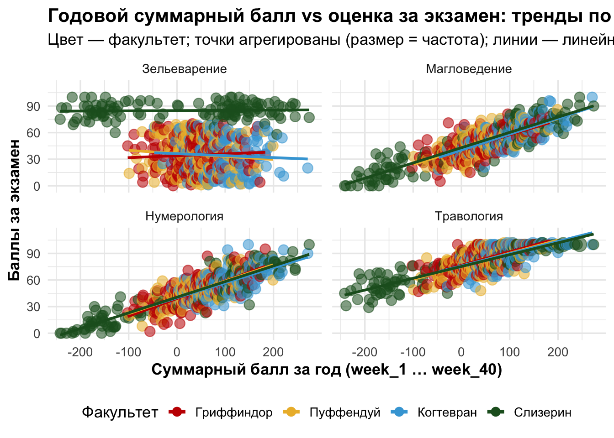
Как и предполагалось, для всех предметов, кроме Зельеваренья, линии тренда одинаковы для всех факультетов. А вот для Зельеваренья, линия тренда Слизерина явно выше, чем у всех остальных. Снейп явно biased.
# то же самое, но по чистоте кровиpal_bs <-c("Чистокровные"="#1B9E77","Полукровные"="#D95F02","Грязнокровные"="#7570B3")df_exams <- hogwarts %>%mutate(total_year =rowSums(across(starts_with("week_")), na.rm =TRUE), Происхождение =case_when( bloodStatus =="pure-blood"~"Чистокровные", bloodStatus =="half-blood"~"Полукровные", bloodStatus =="muggle-born"~"Грязнокровные",TRUE~as.character(bloodStatus) ) ) %>%select(total_year, Происхождение,`Herbology exam`, `Muggle studies exam`, `Arithmancy exam`, `Potions exam`) %>%pivot_longer(cols =c(`Herbology exam`, `Muggle studies exam`, `Arithmancy exam`, `Potions exam`),names_to ="exam",values_to ="score" ) %>%mutate( Экзамен =recode(exam,`Herbology exam`="Травология",`Muggle studies exam`="Магловедение",`Arithmancy exam`="Нумерология",`Potions exam`="Зельеварение"), Экзамен =factor(Экзамен, levels =c("Травология","Магловедение","Нумерология","Зельеварение")) )df_points <- df_exams %>%count(Экзамен, total_year, score, name ="n")df_lines <- df_exams %>%count(Экзамен, total_year, score, Происхождение, name ="n")ggplot() +geom_point(data = df_points,aes(x = total_year, y = score, size = n),alpha =0.5, color ="grey40" ) +scale_size_area(max_size =5, guide ="none") +geom_smooth(data = df_lines,aes(x = total_year, y = score, color = Происхождение, weight = n),method ="lm", formula = y ~ x, se =FALSE, linewidth =1.1 ) +scale_color_manual(values = pal_bs, name ="Происхождение") +facet_wrap(~ Экзамен, ncol =2) +labs(title ="Годовой суммарный балл vs оценка за экзамен: тренды по происхождению",subtitle ="Точки агрегированы (размер = частота одинаковых пар); цвет линий — происхождение (bloodStatus)",x ="Суммарный балл за год (week_1 … week_40)",y ="Баллы за экзамен" ) +theme_minimal(base_size =13) +theme(plot.title =element_text(face ="bold"),axis.title =element_text(face ="bold"),legend.position ="bottom",panel.spacing =unit(0.6, "lines") )
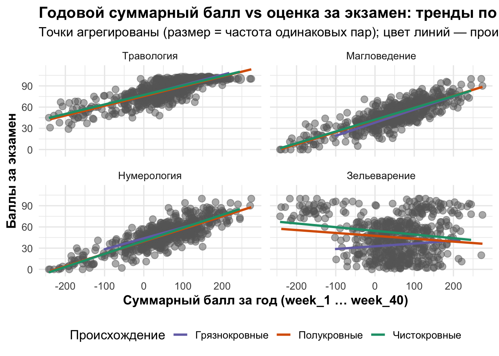
Тут можно порадоваться - на всех предметах, кроме Зельеваренья, нет дискриминации по чистоте крови. На Зельеваренье есть небольшая дискриминация, но я думаю, что это результат лучшего отношения к Слизерину, в котором грязнокровных нет вообще, а полукровных меньше, чем на других факультетах.
8.
library(patchwork)df2 <- hogwarts %>%select(`Divinations exam`, `Defence against the dark arts exam`) %>%pivot_longer(everything(),names_to ="exam",values_to ="score" ) %>%mutate( Экзамен =recode(exam,`Divinations exam`="Прорицания",`Defence against the dark arts exam`="Защита от тёмных искусств" ) ) %>%mutate(Экзамен =factor(Экзамен, levels =c("Прорицания","Защита от тёмных искусств")))pal_exam <-c("Прорицания"="#7A6FF0", "Защита от тёмных искусств"="#2E8B94")meds <- df2 %>%group_by(Экзамен) %>%summarise(med =median(score), .groups ="drop")# Способ 1 - Плотности (форма распределения) + линии медиан (разные геомы, общее поле X)p1 <-ggplot(df2, aes(x = score, fill = Экзамен, color = Экзамен)) +geom_density(alpha =0.25, adjust =1) +geom_vline(data = meds, aes(xintercept = med, color = Экзамен),linetype ="dashed", linewidth =0.9) +scale_color_manual(values = pal_exam, guide =guide_legend(title ="Экзамен")) +scale_fill_manual(values = pal_exam, guide ="none") +labs(title ="Плотность распределения",x ="Баллы за экзамен",y ="Плотность" ) +theme_minimal(base_size =13) +theme(plot.title =element_text(face ="bold"))# Способ 2 - Ящики с точками (описательные статистики + индивидуальные наблюдения)p2 <-ggplot(df2, aes(x = Экзамен, y = score, fill = Экзамен)) +geom_boxplot(width =0.5, outlier.shape =NA, color ="black") +geom_jitter(width =0.12, alpha =0.25, size =0.9, color ="grey30") +scale_fill_manual(values = pal_exam, guide ="none") +labs(title ="Boxplot + точки (распространённость и разброс)",x =NULL, y ="Баллы за экзамен" ) +theme_minimal(base_size =13) +theme(plot.title =element_text(face ="bold"),axis.text.x =element_text(face ="bold") )# Способ 3 - Эмпирические функции распределения (ECDF, «лестницы»)p3 <-ggplot(df2, aes(x = score, color = Экзамен)) +stat_ecdf(geom ="step", linewidth =1.05) +geom_vline(data = meds, aes(xintercept = med, color = Экзамен),linetype ="dashed", linewidth =0.9) +scale_color_manual(values = pal_exam, guide =guide_legend(title ="Экзамен")) +labs(title ="Эмпирическая CDF (сравнение «кто правее»)",x ="Баллы за экзамен",y ="Доля наблюдений ≤ x" ) +theme_minimal(base_size =13) +theme(plot.title =element_text(face ="bold"))(p1 | p2) / p3 +plot_annotation(title ="Прорицания vs Защита от тёмных искусств: три разных сравнения распределений",subtitle ="Верх: форма (плотности) и описательная статистика (boxplot+точки). Низ: ЭКР для сопоставления доминирования.\nПунктир — медиана каждого экзамена.",theme =theme(plot.title =element_text(face ="bold", size =15),plot.subtitle =element_text(size =11) ) )
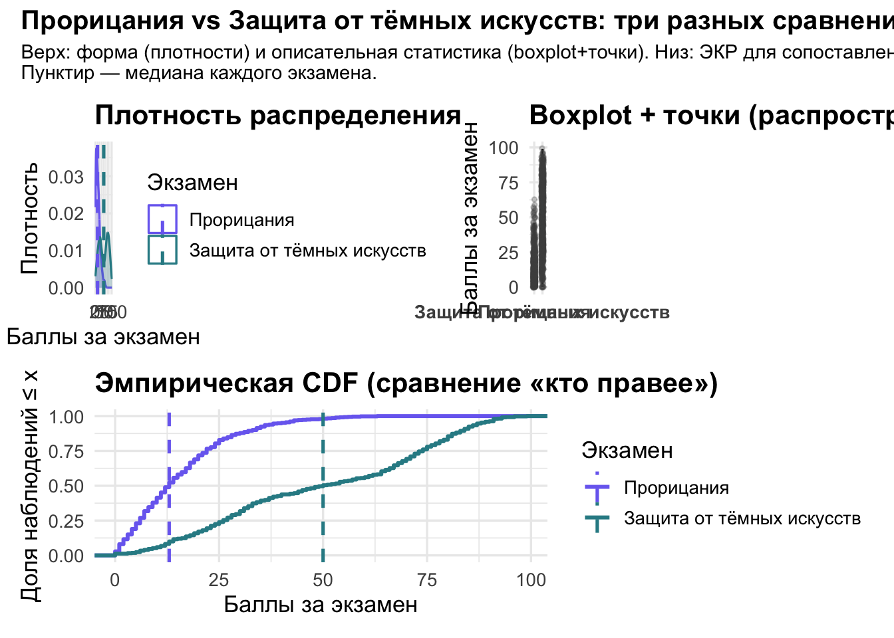
Мы видим, что баллы за прорицание распределены унимодально с четко выраженным пиком, при этом медиана находится около 12,5 баллов, что довольно низко (профессор Трелони, как мы помним, сама не особо умела прорицать).
В защите от темных искусств распредение бимодальное, с двумя пиками около 25 и 75. При этом студенты могли набрать любой балл от 0 до 100.
9.
df_potions <- hogwarts %>%mutate( Происхождение =case_when( bloodStatus =="muggle-born"~"Грязнокровные", bloodStatus =="half-blood"~"Полукровные", bloodStatus =="pure-blood"~"Чистокровные",TRUE~as.character(bloodStatus) ), Факультет =case_when( house =="Gryffindor"~"Гриффиндор", house =="Hufflepuff"~"Пуффендуй", house =="Ravenclaw"~"Когтевран", house =="Slytherin"~"Слизерин",TRUE~as.character(house) ), Происхождение =fct_relevel(Происхождение,"Грязнокровные", "Полукровные", "Чистокровные" ) )sum_potions <- df_potions %>%group_by(Происхождение) %>%summarise(n =n(),mean =mean(`Potions exam`, na.rm =TRUE),sd =sd(`Potions exam`, na.rm =TRUE),se = sd /sqrt(n),ci95 =1.96* se,.groups ="drop" )ggplot(sum_potions, aes(x = Происхождение, y = mean, fill = Происхождение)) +geom_col(color ="black", width =0.7, show.legend =FALSE) +geom_errorbar(aes(ymin = mean - ci95, ymax = mean + ci95), width =0.18) +geom_text(aes(label =sprintf("%.1f", mean)), vjust =-0.6, size =4) +labs(title ="Средний балл по зельеварению по происхождению",subtitle ="Столбики — средние; «усики» — 95% доверительные интервалы. Порядок слева направо: маглорожденные → полукровные → чистокровные",x ="Происхождение",y ="Средний балл по зельеварению" ) +theme_minimal(base_size =15) +theme(plot.title =element_text(face ="bold"),axis.title =element_text(face ="bold") )
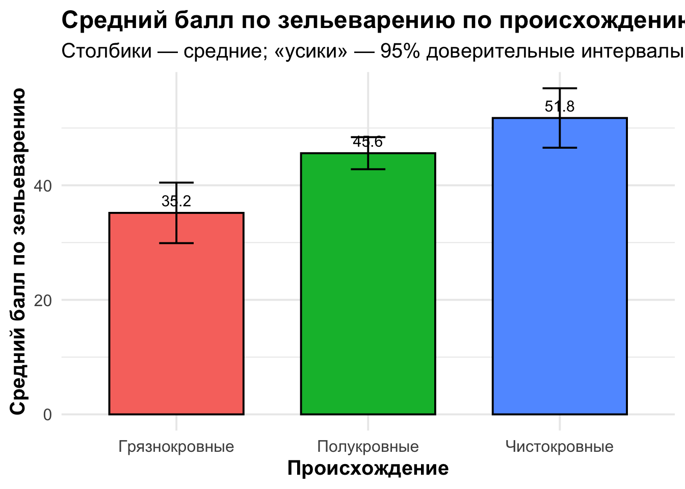
Мы видим явную предвзятость, так как средний балл маглорожденных (грязнокровных) сильно и достоверно ниже, чем у чистокровных. Полукровки - посередине. Но как я уже писал выше, тут, скорее всего, дело не в нелюбви к грязнокровкам, а в нелюбви ко всем остальным факультетам, кроме Слизерина, у профессора Снейпа. И просто так совпало, что в Слизерине нет грязнокровок и меньше, чем на других факультетах, полукровок.
Гипотеза: различия по происхождению обусловлены составом факультетов
Проверка: сравним средние по происхождению внутри каждого факультета. Если «преимущество чистокровных» почти исчезает после учёта факультета — значит работал фактор факультета.
pal_bs <-c("Чистокровные"="#1B9E77","Полукровные"="#D95F02","Грязнокровные"="#7570B3")sum_by_house <- df_potions %>%group_by(Факультет, Происхождение) %>%summarise(n =n(),mean =mean(`Potions exam`, na.rm =TRUE),sd =sd(`Potions exam`, na.rm =TRUE),se = sd /sqrt(n),ci95 =1.96* se,.groups ="drop" ) %>%mutate( Происхождение =fct_relevel(Происхождение, "Грязнокровные","Полукровные","Чистокровные") )ggplot(sum_by_house,aes(x = Происхождение, y = mean, fill = Происхождение)) +geom_col(color ="black", width =0.7) +geom_errorbar(aes(ymin = mean - ci95, ymax = mean + ci95), width =0.18) +facet_wrap(~ Факультет, ncol =2) +scale_fill_manual(values = pal_bs, guide ="none") +labs(title ="Средний балл по зельеварению по происхождению внутри факультетов",x ="Происхождение",y ="Средний балл по зельеварению" ) +theme_minimal(base_size =13) +theme(plot.title =element_text(face ="bold"),axis.title =element_text(face ="bold"),strip.text =element_text(face ="bold") )
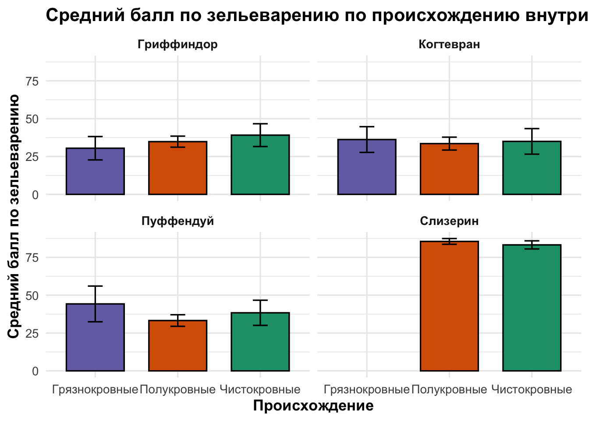
Как мы видим, внутри факультетов достовреной разницы между людьми с разным происхождением нет. При этом отчетливо видно, что у Слизерина в обоих присутсвующих категориях оценки выше чем у соответсвующих категорий других факультетов (у полукровок даже незначительно выше чем у чистокровных). Таким образом, профессор Снейп не расист, а просто Слизерин-супрематист.
10.
df <- hogwarts %>%transmute(charms =`Charms exam`,runes =`Study of ancient runes exam` )p0 <-ggplot(df, aes(charms, runes)) +geom_point(size =1.1, alpha =0.9) +labs(title ="Базовый скаттер: заметный оверплоттинг",x ="Баллы за экзамен по заклинаниям",y ="Баллы за экзамен по древним рунам") +theme_minimal(base_size =13)p0
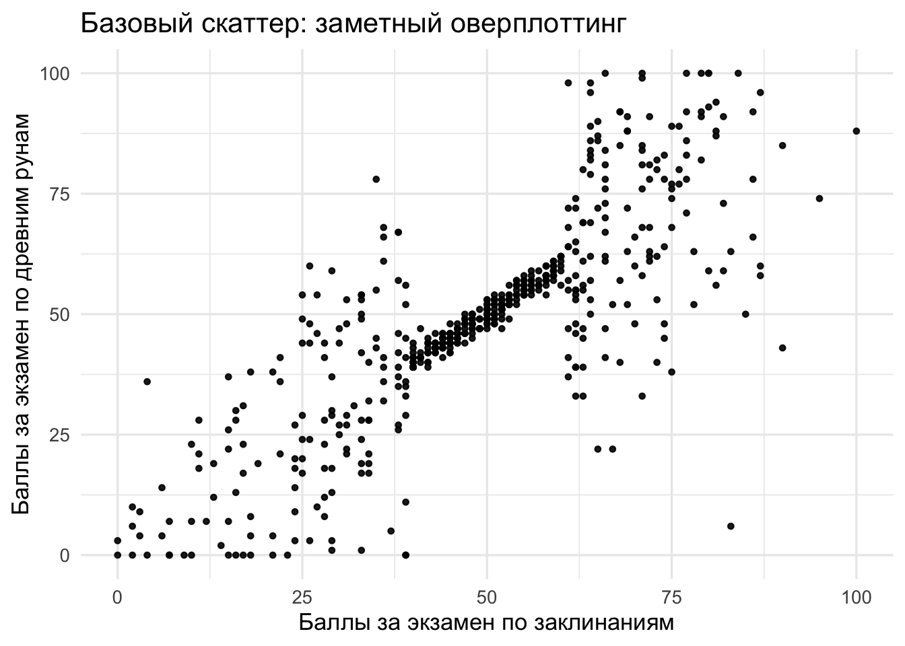
# Способ 1 - Агрегирование дубликатов координат: размер точки = частотаdf_counts <- df %>%count(charms, runes, name ="n")p1 <-ggplot(df_counts, aes(charms, runes)) +geom_point(aes(size = n), alpha =0.6) +scale_size_area(max_size =7, guide ="none") +labs(title ="Агрегирование дубликатов (size = частота)",x ="Заклинания", y ="Древние руны") +theme_minimal(base_size =13)p1
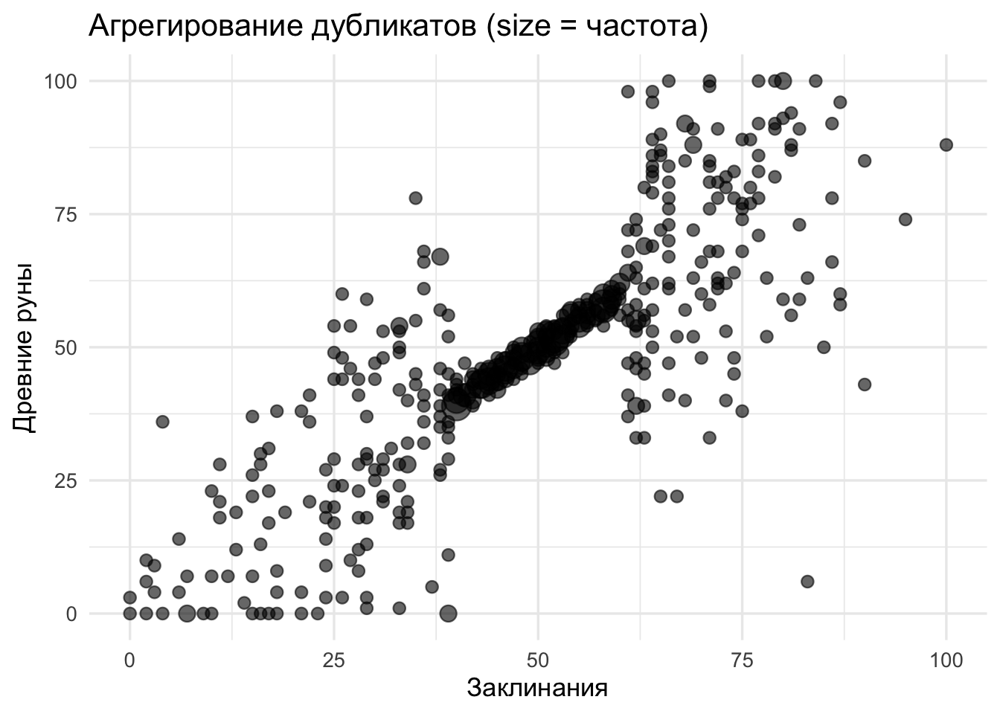
# Способ 2 - небольшое дрожание по обеим осям, чтобы развести идентичные баллыp2 <-ggplot(df, aes(charms, runes)) +geom_jitter(width =0.3, height =0.3, alpha =0.35, size =0.9) +labs(title ="Небольшой jitter по X и Y",x ="Заклинания", y ="Древние руны") +theme_minimal(base_size =13)p2
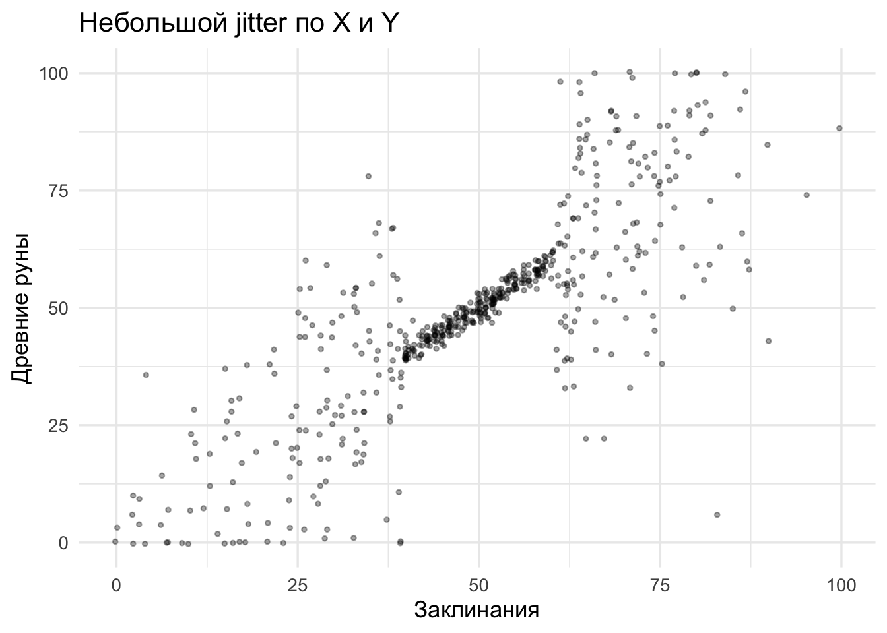
# Способ 3 - 2D-биннинг (прямоугольные "тепловые" бины)p3 <-ggplot(df, aes(charms, runes)) +geom_bin2d(bins =30) +labs(title ="2D-биннинг (geom_bin2d)",x ="Заклинания", y ="Древние руны", fill ="Частота") +theme_minimal(base_size =13)p3
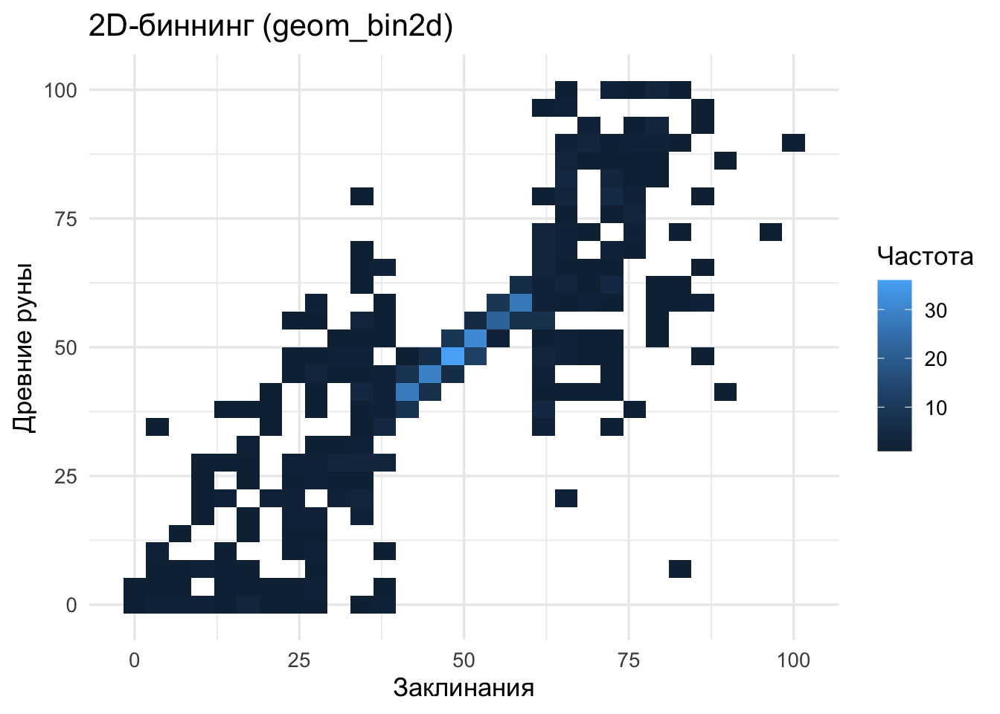
# Способ 4 - 2D-плотность (ядровая): закрашенные изоденсыp4 <-ggplot(df, aes(charms, runes)) +stat_density_2d_filled(contour_var ="ndensity", alpha =0.9) +labs(title ="2D-плотность (stat_density_2d_filled)",x ="Заклинания", y ="Древние руны", fill ="Плотность") +theme_minimal(base_size =13)p4
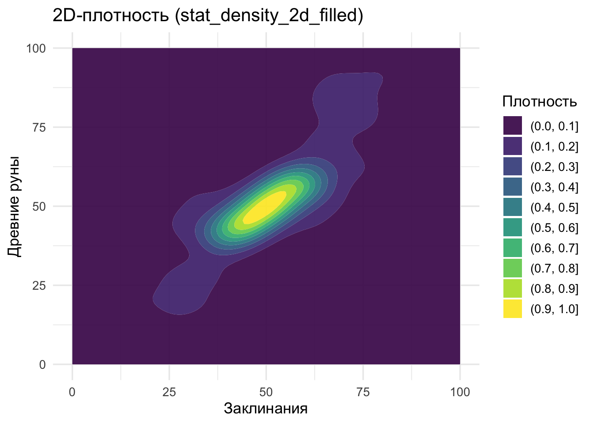
11.
df30 <- hogwarts %>%slice_head(n =30) %>%mutate( Происхождение =case_when( bloodStatus =="pure-blood"~"Чистокровные", bloodStatus =="half-blood"~"Полукровные", bloodStatus =="muggle-born"~"Грязнокровные",TRUE~as.character(bloodStatus) ), Факультет =case_when( house =="Ravenclaw"~"Когтевран", house =="Gryffindor"~"Гриффиндор", house =="Hufflepuff"~"Пуффендуй", house =="Slytherin"~"Слизерин",TRUE~as.character(house) ) ) %>%pivot_longer(starts_with("week_"), names_to ="week", values_to ="score") %>%mutate(week = readr::parse_number(week)) %>%ungroup()ggplot(df30, aes(x = week, y = score, group = id, color = Происхождение)) +geom_line(size =0.5) +gghighlight( Факультет =="Когтевран",use_direct_label =TRUE,label_key = Происхождение,label_params =list(max.overlaps =Inf,nudge_x =0.6,direction ="y",box.padding =0.25,min.segment.length =0 ),unhighlighted_params =list(color ="#87CEEB",size =0.15,alpha =0.6 ) ) +scale_x_continuous(breaks =seq(0, 40, 5)) +labs(title ="Первые 30 студентов: динамика по неделям",subtitle ="Когтевран подсвечен; лейблы показывают происхождение",x ="Неделя", y ="Баллы" ) +theme_minimal(base_size =14) +theme(legend.position ="none")
Warning: Using `size` aesthetic for lines was deprecated in ggplot2 3.4.0.
ℹ Please use `linewidth` instead.
Warning: Tried to calculate with group_by(), but the calculation failed.
Falling back to ungrouped filter operation...
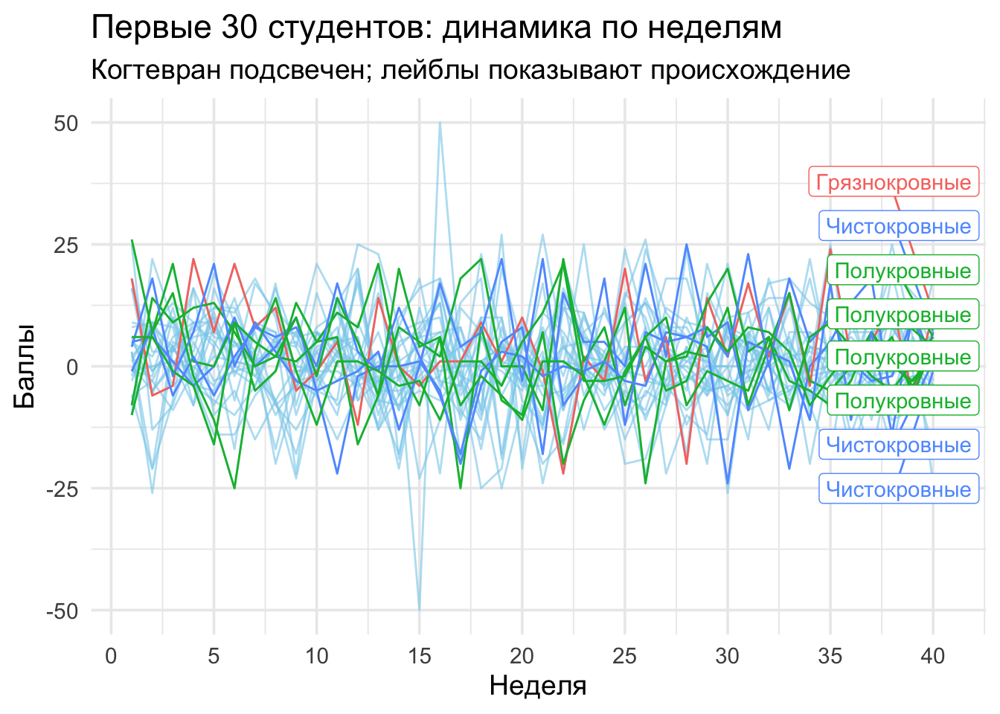
12.
library(grid)pal_house <-c("Гриффиндор"="#C50000","Пуффендуй"="#ECB936","Когтевран"="#41A6D9","Слизерин"="#1F5D25")df <- hogwarts %>%transmute( Пол =recode(sex,"female"="Девочки","male"="Мальчики",.default =as.character(sex)), Факультет =recode(house,"Gryffindor"="Гриффиндор","Hufflepuff"="Пуффендуй","Ravenclaw"="Когтевран","Slytherin"="Слизерин",.default =as.character(house)), Очки = result ) %>%mutate( Факультет =factor(Факультет, levels =c("Гриффиндор","Пуффендуй","Когтевран","Слизерин")), Пол =factor(Пол, levels =c("Девочки","Мальчики")) )arrows_df <-tibble( Пол =factor(c("Девочки","Мальчики"), levels =levels(df$Пол)),x =factor("Слизерин", levels =levels(df$Факультет)),xend = x,y =c( 5, 12),yend =c( 25, 28))ggplot(df, aes(x = Факультет, y = Очки, fill = Факультет)) +geom_violin(color ="black", width =0.95, alpha =0.95, trim =FALSE) +geom_boxplot(width =0.16, outlier.shape =NA, fill ="white", color ="white", linewidth =0.9) +stat_summary(fun = mean, geom ="point", shape =23, size =3.8,fill ="#8B0000", color ="black") +geom_hline(yintercept =0, linetype ="dashed", linewidth =1.1, color ="#F19999") +geom_curve(data = arrows_df,aes(x =as.numeric(x) -0.15, y = y, xend =as.numeric(x) -0.15, yend = yend),inherit.aes =FALSE, curvature =-0.35,arrow =arrow(length =unit(3, "mm")), color ="black", linewidth =0.6 ) +scale_fill_manual(values = pal_house, name ="Факультет") +facet_grid(. ~ Пол) +labs(title ="Баллы студентов Хогвартса",subtitle ="Распределение числа баллов у студентов различных факультетов Хогвартса в 2024–2025 учебном году",x =NULL,y ="Количество очков",caption ="Источник: недоброжелательная фантазия автора лекции, пропущенная сквозь сознание Артема Пустовида (меня)" ) +theme_minimal(base_size =16) +theme(plot.title =element_text(face ="bold", size =20, margin =margin(b =2)),plot.subtitle =element_text(color ="#6B4E3D", face ="bold", size =12, margin =margin(b =8)),axis.title.y =element_text(face ="bold", size =16, margin =margin(r =8)),axis.text.x =element_text(face ="bold", size =13),strip.background =element_rect(fill ="grey90", color =NA),strip.text =element_text(face ="bold", size =14),legend.position ="bottom",legend.title =element_text(face ="bold"),panel.spacing.x =unit(1, "lines") )
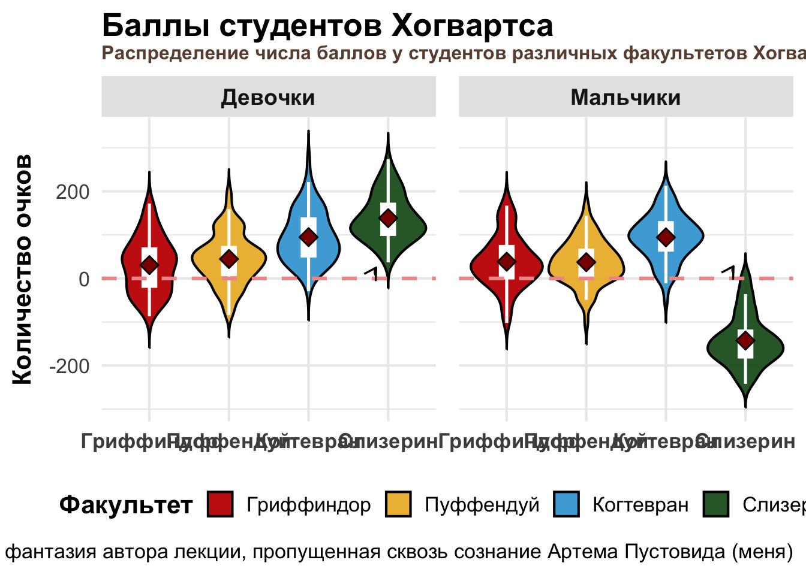
Интерпретация: Мы видим, что у Гриффиндора и у Пуффендуя примерно одинаковая успеваемость (и у мальчиков, и у девочек). Когтевран имеет чуть более хорошую успеваемость. Наиболее необычен Слизерин. В нем самые успешные среди всех факультетов девочки (самая неуспешная девочка успешнее среднего Слизеринца), и самые неуспешные мальчики (самый успешный мальчик хуже, чем средний ученик Слизерина).